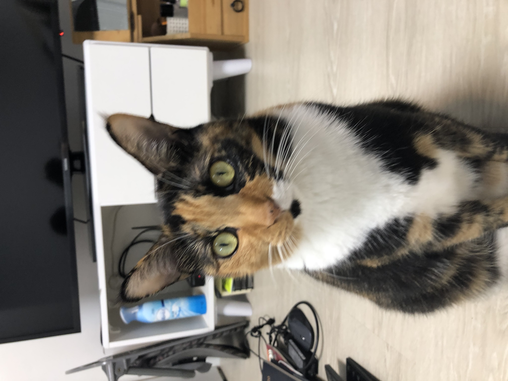
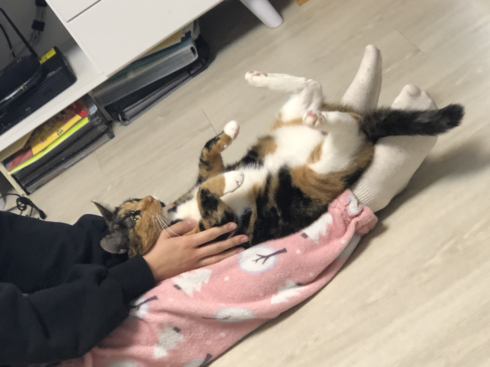
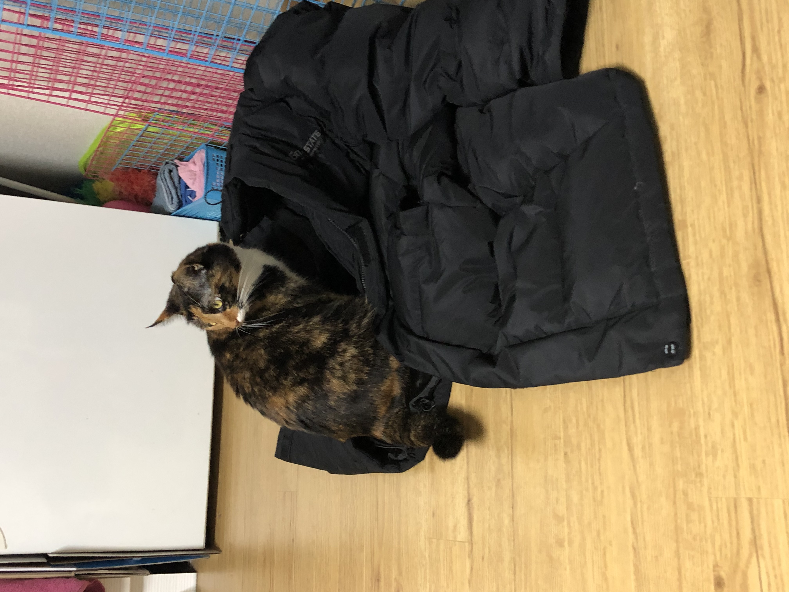
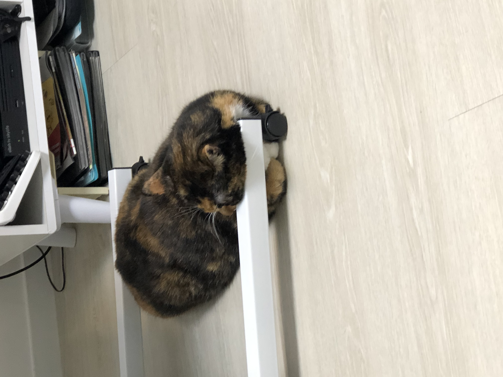
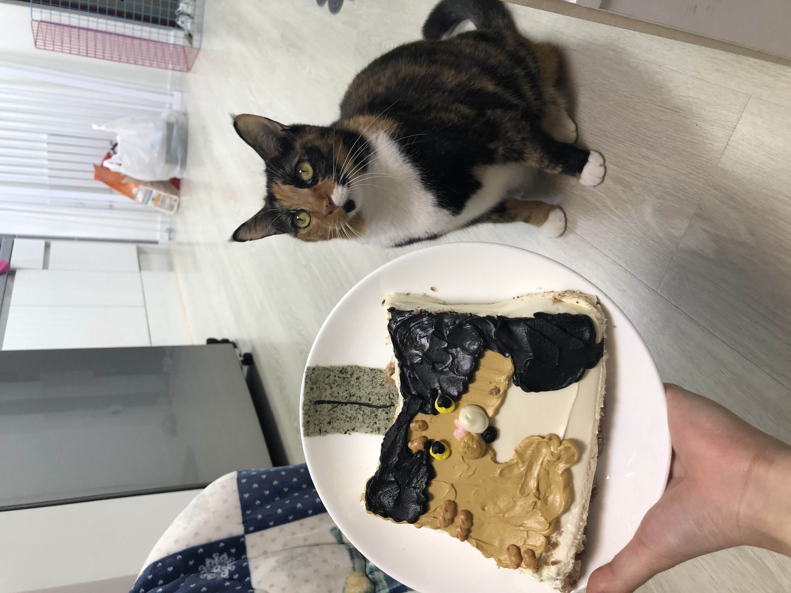
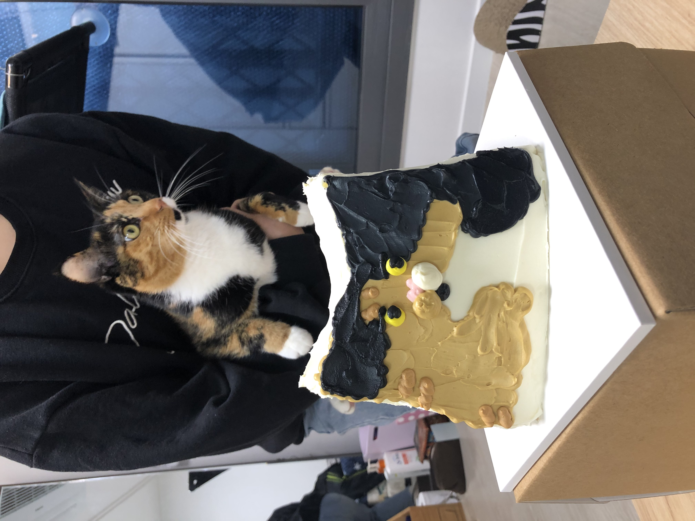
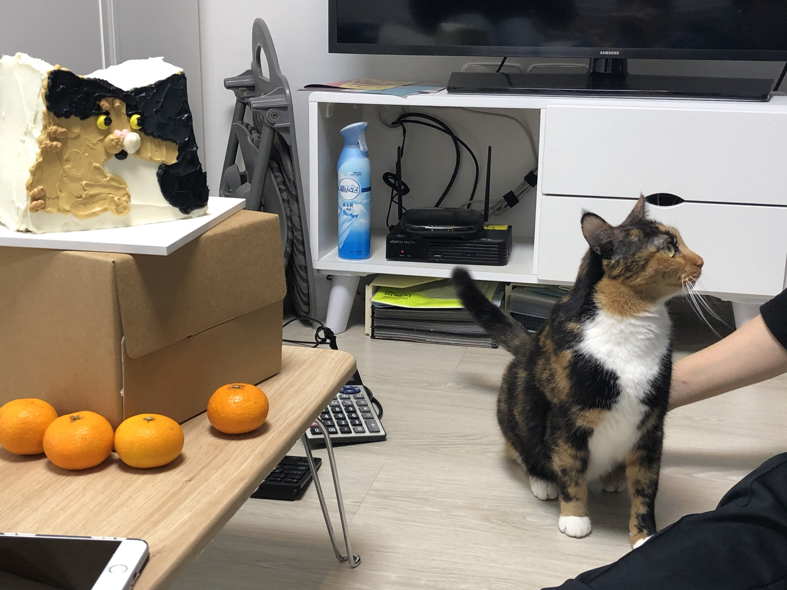
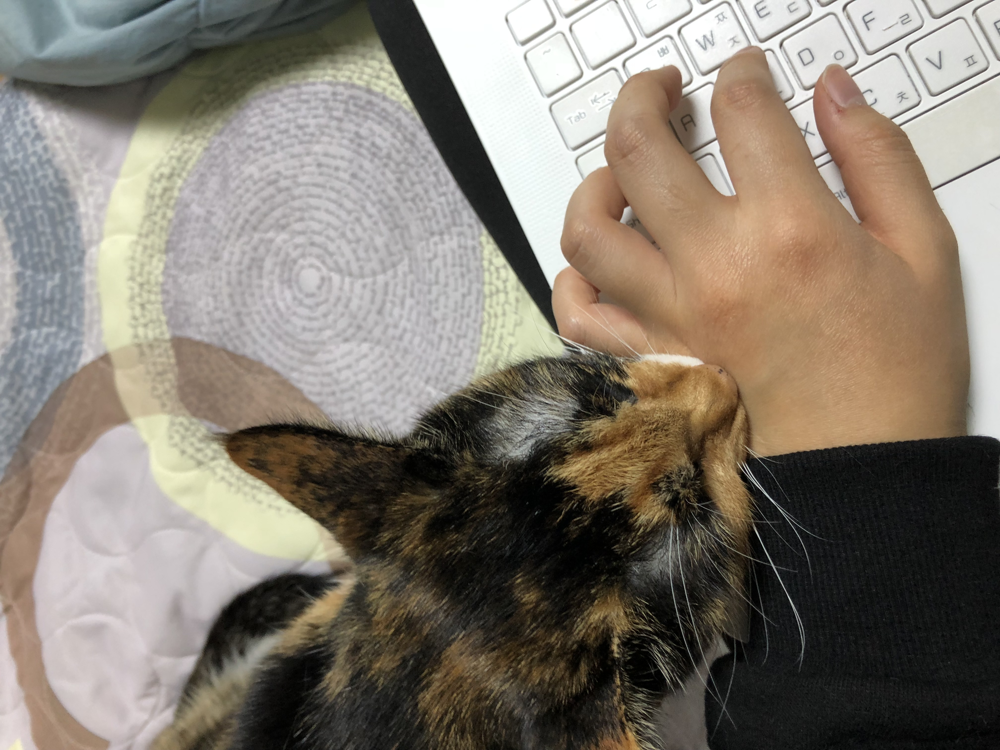
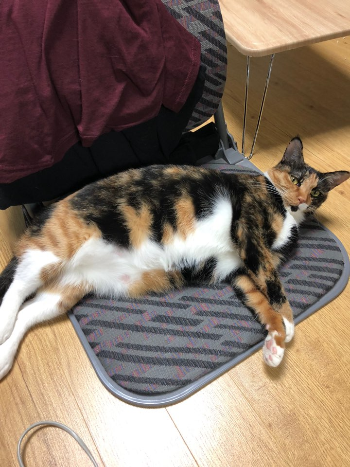
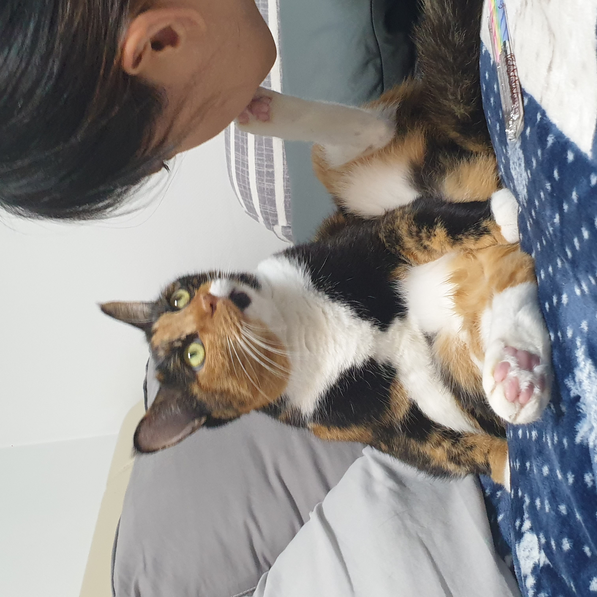

귀염둥이 큐비에 대해서 이야기를 해보려고 합니다.
  큐비는 입가의 점과 풍성한 가슴털이 아주 매력적인 친구에요. 원래는 보호소에 있던 아이를 제 친구가 잠깐만 임시보호를 하기로 했는데, 이미 4살이나 된 성묘고, 털 색이 특이해서 그런지 아무도 입양을 안하더라구요.   심지어 보호소에서도 친구만 믿고 큐비를 거의 방치하다싶이해서 화가 난 친구가 입양을 하게 되었어요..   (제가 주문제작한 큐비 케이크입니다ㅎㅎ 귀엽죠?)
과도한 관심을 주면 화를 내지만 항상 관심의 한 가운데 있어야하는 귀여운아이에요   깨무는것을 좋아하고 밥을 너무 많이먹어서 지금 다이어트를 해야하지요 (제가 큐비 발에 뽀뽀를 하고있는 사진입니다)